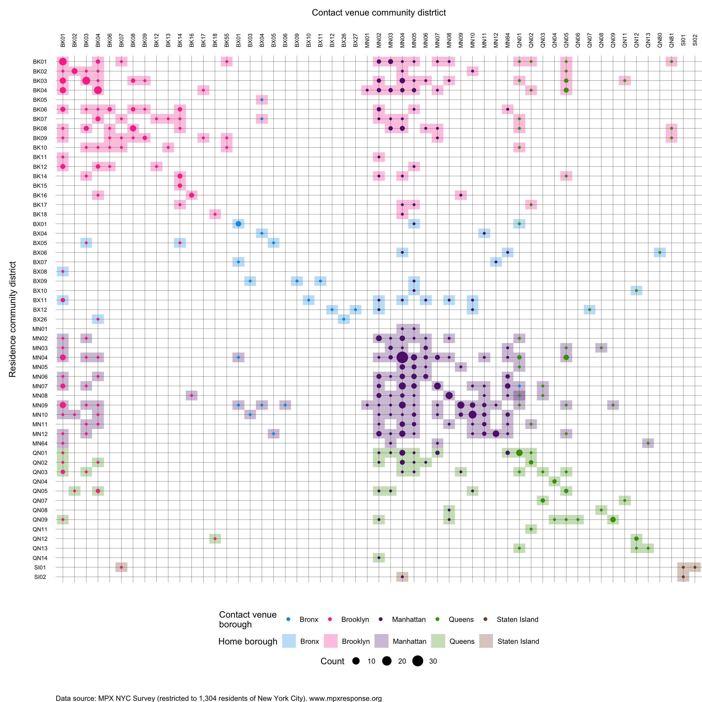

Appendix G — Movement and spatial mixing
Movement from home to contact venue community district
Spatial mixing coefficient by age

| From | To | Value |
|---|---|---|
| 18-24 | 18-24 | 36% (24 to 49) |
| 18-24 | 25-34 | -3% (-6 to 1) |
| 18-24 | 35-44 | -3% (-4 to -2) |
| 18-24 | 45-54 | -12% (-19 to -7) |
| 18-24 | 55+ | -27% (-35 to -20) |
| 25-34 | 18-24 | -3% (-5 to 3) |
| 25-34 | 25-34 | 11% (8 to 14) |
| 25-34 | 35-44 | -3% (-5 to -1) |
| 25-34 | 45-54 | -13% (-15 to -10) |
| 25-34 | 55+ | -24% (-27 to -19) |
| 35-44 | 18-24 | -3% (-7 to 4) |
| 35-44 | 25-34 | -1% (-6 to 2) |
| 35-44 | 35-44 | 15% (9 to 20) |
| 35-44 | 45-54 | -13% (-14 to -11) |
| 35-44 | 55+ | -18% (-24 to -11) |
| 45-54 | 18-24 | 3% (-7 to 9) |
| 45-54 | 25-34 | -3% (-6 to 4) |
| 45-54 | 35-44 | -6% (-10 to -3) |
| 45-54 | 45-54 | 29% (20 to 38) |
| 45-54 | 55+ | -17% (-23 to -11) |
| 55+ | 18-24 | -3% (-9 to 16) |
| 55+ | 25-34 | -5% (-9 to -1) |
| 55+ | 35-44 | -2% (-7 to 2) |
| 55+ | 45-54 | -7% (-14 to 2) |
| 55+ | 55+ | 49% (28 to 57) |
Spatial mixing coefficient by race-Gender

| From | To | Value |
|---|---|---|
| White Cisgender Man | White Cisgender Man | 12% (7 to 17) |
| White Cisgender Man | Latinx Cisgender Man | -12% (-19 to -3) |
| White Cisgender Man | Black Cisgender Man | -24% (-29 to -19) |
| White Cisgender Man | Other Cisgender Man | -3% (-8 to 0) |
| White Cisgender Man | Non-Binary Person | -3% (-8 to 8) |
| White Cisgender Man | Transgender Man | 5% (-4 to 14) |
| White Cisgender Man | Transgender Woman | -17% (-24 to -10) |
| White Cisgender Man | Cisgender Woman | -15% (-18 to -8) |
| White Cisgender Man | Another Demographic | 43% (10 to 71) |
| Latinx Cisgender Man | White Cisgender Man | -16% (-23 to -11) |
| Latinx Cisgender Man | Latinx Cisgender Man | 48% (39 to 66) |
| Latinx Cisgender Man | Black Cisgender Man | 0% (-5 to 3) |
| Latinx Cisgender Man | Other Cisgender Man | -3% (-13 to 1) |
| Latinx Cisgender Man | Non-Binary Person | -1% (-5 to 7) |
| Latinx Cisgender Man | Transgender Man | 16% (3 to 42) |
| Latinx Cisgender Man | Transgender Woman | -19% (-30 to -5) |
| Latinx Cisgender Man | Cisgender Woman | -13% (-28 to 2) |
| Latinx Cisgender Man | Another Demographic | 36% (3 to 76) |
| Black Cisgender Man | White Cisgender Man | -24% (-27 to -21) |
| Black Cisgender Man | Latinx Cisgender Man | 9% (-8 to 19) |
| Black Cisgender Man | Black Cisgender Man | 102% (78 to 148) |
| Black Cisgender Man | Other Cisgender Man | -5% (-18 to 8) |
| Black Cisgender Man | Non-Binary Person | -17% (-31 to 0) |
| Black Cisgender Man | Transgender Man | -26% (-45 to -2) |
| Black Cisgender Man | Transgender Woman | 2% (-24 to 42) |
| Black Cisgender Man | Cisgender Woman | 3% (-19 to 22) |
| Black Cisgender Man | Another Demographic | 36% (12 to 61) |
| Other Cisgender Man | White Cisgender Man | -6% (-14 to -1) |
| Other Cisgender Man | Latinx Cisgender Man | -4% (-10 to 1) |
| Other Cisgender Man | Black Cisgender Man | -5% (-7 to -3) |
| Other Cisgender Man | Other Cisgender Man | 32% (19 to 44) |
| Other Cisgender Man | Non-Binary Person | 2% (-8 to 16) |
| Other Cisgender Man | Transgender Man | 14% (-2 to 35) |
| Other Cisgender Man | Transgender Woman | -19% (-35 to 9) |
| Other Cisgender Man | Cisgender Woman | -23% (-29 to -16) |
| Other Cisgender Man | Another Demographic | 33% (14 to 49) |
| Non-Binary Person | White Cisgender Man | -8% (-14 to -1) |
| Non-Binary Person | Latinx Cisgender Man | -4% (-7 to 0) |
| Non-Binary Person | Black Cisgender Man | -22% (-31 to -5) |
| Non-Binary Person | Other Cisgender Man | 2% (-7 to 15) |
| Non-Binary Person | Non-Binary Person | 65% (36 to 108) |
| Non-Binary Person | Transgender Man | 61% (22 to 105) |
| Non-Binary Person | Transgender Woman | 11% (-12 to 34) |
| Non-Binary Person | Cisgender Woman | -21% (-30 to -4) |
| Non-Binary Person | Another Demographic | 35% (7 to 77) |
| Transgender Man | White Cisgender Man | -12% (-18 to -1) |
| Transgender Man | Latinx Cisgender Man | 1% (-7 to 10) |
| Transgender Man | Black Cisgender Man | -20% (-42 to 11) |
| Transgender Man | Other Cisgender Man | -16% (-28 to 4) |
| Transgender Man | Non-Binary Person | 68% (31 to 127) |
| Transgender Man | Transgender Man | 239% (74 to 366) |
| Transgender Man | Transgender Woman | -12% (-28 to 5) |
| Transgender Man | Cisgender Woman | -27% (-49 to -14) |
| Transgender Man | Another Demographic | 22% (-31 to 50) |
| Transgender Woman | White Cisgender Man | -11% (-17 to 0) |
| Transgender Woman | Latinx Cisgender Man | -8% (-24 to 22) |
| Transgender Woman | Black Cisgender Man | 15% (-17 to 47) |
| Transgender Woman | Other Cisgender Man | 0% (-22 to 19) |
| Transgender Woman | Non-Binary Person | 27% (13 to 50) |
| Transgender Woman | Transgender Man | -6% (-27 to 26) |
| Transgender Woman | Transgender Woman | 94% (-38 to 313) |
| Transgender Woman | Cisgender Woman | -4% (-48 to 62) |
| Transgender Woman | Another Demographic | 72% (39 to 124) |
| Cisgender Woman | White Cisgender Man | -5% (-10 to -2) |
| Cisgender Woman | Latinx Cisgender Man | 5% (-8 to 15) |
| Cisgender Woman | Black Cisgender Man | -2% (-8 to 9) |
| Cisgender Woman | Other Cisgender Man | -22% (-27 to -15) |
| Cisgender Woman | Non-Binary Person | -11% (-23 to 9) |
| Cisgender Woman | Transgender Man | -15% (-36 to -5) |
| Cisgender Woman | Transgender Woman | -13% (-49 to 54) |
| Cisgender Woman | Cisgender Woman | 90% (69 to 110) |
| Cisgender Woman | Another Demographic | 64% (44 to 81) |
| Another Demographic | White Cisgender Man | -2% (-27 to 18) |
| Another Demographic | Latinx Cisgender Man | -12% (-18 to -5) |
| Another Demographic | Black Cisgender Man | -4% (-35 to 28) |
| Another Demographic | Other Cisgender Man | 5% (-8 to 24) |
| Another Demographic | Non-Binary Person | -12% (-40 to 27) |
| Another Demographic | Transgender Man | -5% (-37 to 25) |
| Another Demographic | Transgender Woman | -19% (-42 to 9) |
| Another Demographic | Cisgender Woman | -16% (-27 to -10) |
| Another Demographic | Another Demographic | 202% (39 to 613) |
Spatial mixing coefficient by sexual orientation

| From | To | Value |
|---|---|---|
| Gay | Gay | 3% (1 to 5) |
| Gay | Bisexual | -9% (-12 to -4) |
| Gay | Straight | -17% (-24 to -8) |
| Gay | Queer | 5% (-1 to 10) |
| Gay | Another Orientation | -19% (-31 to -13) |
| Bisexual | Gay | -6% (-12 to -3) |
| Bisexual | Bisexual | 22% (17 to 36) |
| Bisexual | Straight | 4% (-3 to 13) |
| Bisexual | Queer | 6% (1 to 13) |
| Bisexual | Another Orientation | -6% (-22 to 8) |
| Straight | Gay | -9% (-14 to -4) |
| Straight | Bisexual | 1% (-9 to 7) |
| Straight | Straight | 133% (64 to 189) |
| Straight | Queer | -6% (-16 to 1) |
| Straight | Another Orientation | -22% (-40 to 1) |
| Queer | Gay | -2% (-5 to 0) |
| Queer | Bisexual | -9% (-15 to -2) |
| Queer | Straight | -20% (-29 to -11) |
| Queer | Queer | 39% (29 to 45) |
| Queer | Another Orientation | -37% (-44 to -32) |
| Another Orientation | Gay | -11% (-22 to -2) |
| Another Orientation | Bisexual | 6% (-12 to 17) |
| Another Orientation | Straight | -18% (-34 to 2) |
| Another Orientation | Queer | -11% (-24 to 0) |
| Another Orientation | Another Orientation | 301% (157 to 533) |